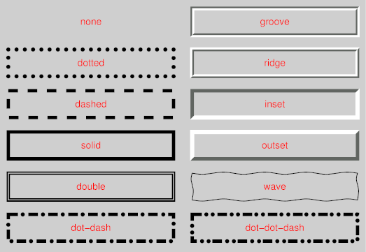

Bordes
En esta imagen se muestran los diferentes tipos de bordes.

Se muestran los diferentes tipos de bordes, como se aplican colores y tipos de fuentes.
Esto un parrafo dentro de un estilo de borde dotted.
Esto un parrafo dentro de un estilo de borde dashed.
Esto un parrafo dentro de un estilo de borde solid.
Esto un parrafo dentro de un estilo de borde outset.
Esto un parrafo dentro de combinaciones de estilos de bordes.
Esto un parrafo dentro de un estilo de borde double.
Regresar